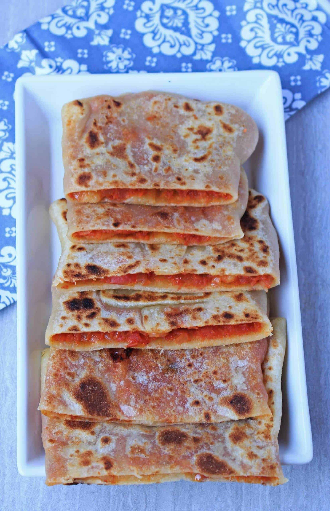

The Holly Mahdjouba

Description
Mhadjeb this Algerian recipe which is a kind of flaky pancake made from semolina traditionally stuffed with
onion, tomatoes and even dried meat or we can substitute for the minced meat and then add harissa, the success
of the dough solves in its kneading which must be long enough and then the quantity of water incorporated if it
is two stages are respected the shaping is a breeze.
This dish consists of dough and onion and tomato sauce, but it is wonderful, it’s called Mahajib and the origin
of this dish was invented by a woman who never went out and no one knew anything about her. She was called
Mahjouba, and this word for the Algerians means the woman whom no one knows and who does not leave the house and
the honorable one at the same time. She used to cook it and send it with one of her children To sell it in the
market and say this is the hottest and hottest of the veiled people, and people circulated it and began to love
it and call it Mhajib
Ingedients
The Dough
- 1 cup semoline
- 1⁄2 cup flower
- 1 pinch salt
- 1 1⁄2 cup warm water
- plastic bag
- oil
The Filling
- 4 onions
- 2 tomatoes
- salt
- 2 tablespoons oil
- blach pepper
- chili pepper
Instructions
The Dough
- In a bowl Put semolina, flour, salt then mix the ingredients together
- After that add the water gradually
- then knead with your hand until the dough is consistent and soft, while adding water gradually
- the most important step is to take a plastic bag and dip it in warm water
- After it rest take out the dough and knead in lightly for a couple of minutes
- After it rest take out the dough and knead in lightly for a couple of minutes
- Wet your hands with oil and form balls of dough and put them next to each other, remembering the order, and
let them rest again, the more the dough rest, the better the results are
The Filler
- Cut the onions into thin, long slices and cook them in some oil over medium to low heat and cover with
constant stirring until they become translucent and soft.
- Remove the peel of the tomatoes and chop them thinly, add them to the onions with salt and spices, cover and
leave to cook over low heat, stirring occasionally, so that they do not stick.
Shaping Mhajeb
- On an oiled work surface, spread the first ball of dough. Sprinkle lightly with oil to help you form a big circle
- Put the filling of onions and tomatoes in the middle preferably cold
- Fold over each side to enclose the stuffing and get a square.
- Lightly oil the surface of the square you got and gently place it on a baking sheet or a pan over medium-low heat
- Cook the first side well browned, turn over, and do the same for the second.
- Enjoy it hot